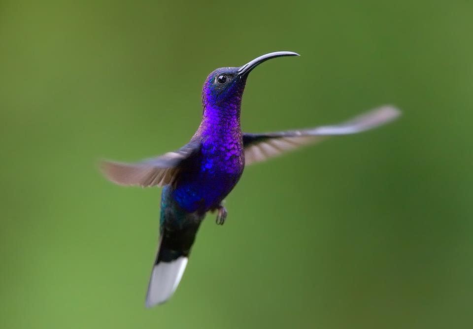

Tipos de Colibri
Existen 343 especies identificadas de colibríes ubicadas alrededor del mundo. Esto los convierte en la segunda mayor familia de aves en el mundo.
Especies
- Colibri Rufo Uno de los tipos de colibríes de los que la gente sabe mucho es el colibrí rufo. Se trata de un ave al que las personas inmediatamente reconocen y disfrutan.
- Colibri de Ana El colibrí de Ana, se debe al nombre de Anna Messena, que vivió desde 1802 hasta 1887, en Europa, una mujer muy prestigiosa.
- Colibrí cabeza violeta Muchas personas se interesan por el colibrí cabeza violeta, ya que tiene un aspecto singular, también es un tipo de colibrí que abunda en áreas abiertas más que otros.
- Colibrí de garganta rubí Una de las más comunes de todas las especies de colibríes con las que las personas están familiarizadas es el colibrí garganta rubí.
- Colibrí ermitaño golirrayado Uno de los tipos más conocidos de colibríes ermitaños es el Colibrí ermitaño golirrayado. Parecen tener buenas poblaciones y en este momento no se consideran en peligro de extinción.
- Colibrí golondrina Uno de los más bonitos de todos los colibríes es el colibrí golondrina. Con colores muy vibrantes que se unen para completar un aspecto impresionante.
- Colibrí diamante de capucha azul El Colibrí diamante de capucha azul tiene muchas historias en las diversas culturas. Parece que muchos de los primeros dibujos también son de esta especie en particular.